People
Program Director

Program Co-Director
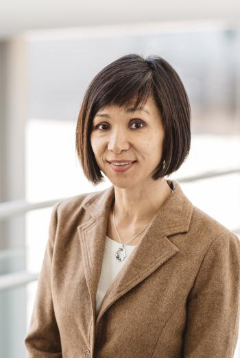
Research Scientist, Sirota Lab, UCSF
Keynote Speaker (2021)
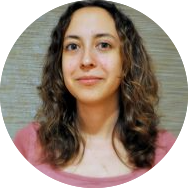
AI4ALL Co-founder and Board Member
Assistant Professor of Computer Science, Princeton
Assistant Professor of Computer Science, Princeton
Faculty Guest Speakers (2021)

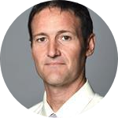
Professor of Neurology, UCSF
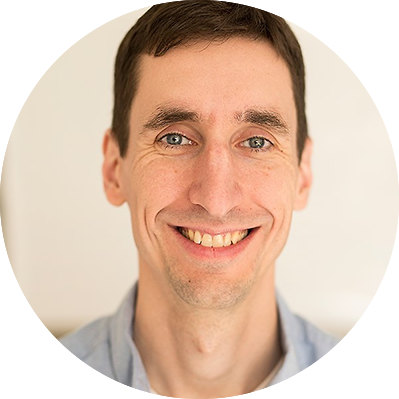
Associate Professor of Epidemiology & Biostatistics, UCSF
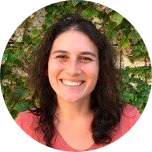
Assitant Professor, Rheumatology, UCSF
Assistant Professor, Radiation Oncology, UCSF
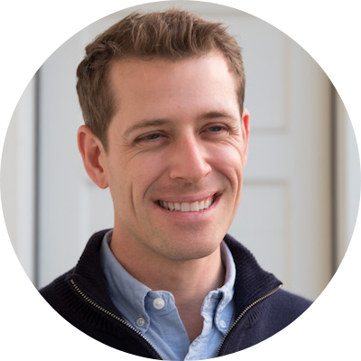
Assistant Professor, Institute for Neurodegenerative Diseases, UCSF

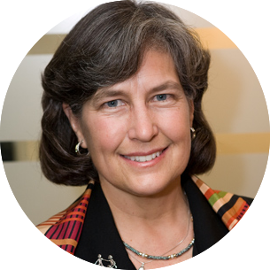
Associate Clinical Professor of Medicine, UCSF
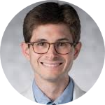
Assistant Professor of Otolaryngology, UCSF
Student Instructors, TAs, and Mentors (2021)
- Instruction Team:
- Theory: Saumya Bollam, Gunvant Chaudhari, Krishna Choudhary, Will Connell, Tianna Grant, Drake Johnson, Albert Lee, Karla Lindquist, Jialing Liu, Wren Saylor, Alice Tang, Maggie Tsui, Aidan Winters
- Python: Saumya Bollam, Gunvant Chaudhari, Drake Johnson, Pooja Kathail, Albert Lee, Wren Saylor, Alice Tang, Maggie Tsui, Nana Afia Twumasi-Ankrah, Aidan Winters
- Alumni TAs: Eunice Leung, Saloni Shah, Isha Karim, Sonica Prakash, Claire Swadling
- Research Project Leads: Saumya Bollam & Snow Naing (Krogan Lab), Jiapei Chen (Huang Lab), Ryder Easterlin (Ahituv Lab), Albert Lee (UCSF Staff Researcher), Alice Tang (Sirota Lab) & Nana Twumasi-Ankrah (Graduate Student)
- Undergraduate Student Panel: Maya Gonzalez, Nishant Jain, Anooshree Sengupta, Janice Yang, Alennie Roldan
- Bio in AI Industry Panel: Sarah Aerni, Tiffany Chen, Sam Gross, Linda Szabo
- AI4ALL: Tess Posner, Olga Russakovsky, Fei Fei Li, Valerie Allen, Beth McBride, Jonathan Garcia, Thalea Torres
- Personal Growth Session: Bill Lindstaedt
- Administrative Support: Edna Rodas
Keynote Speaker (2020)
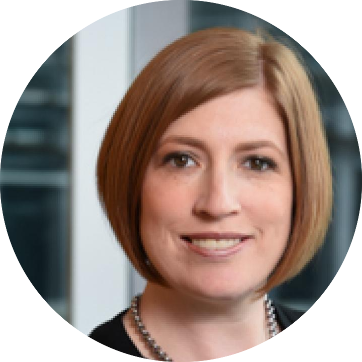
Director, Center For Translational Bioinformatics
Associate Director, Penn Center For Precision Medicine
Associate Director, Penn Center For Precision Medicine
Faculty Guest Speakers (2020)
Professor of Neurology, UCSF
Professor of Pediatrics, UCSF
Chief Data Scientist, UC Health
Chief Data Scientist, UC Health
Assitant Professor, Rheumatology, UCSF
Assistant Professor, Radiation Oncology, UCSF
Assistant Professor, Institute for Neurodegenerative Diseases, UCSF
Assistant Professor of Otolaryngology, UCSF
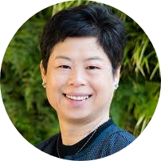
Professor of Medicine, UCSF
Director of Digital Health, UCSF
Director of Digital Health, UCSF
Student Instructors, TAs, and Mentors (2020)
- Instruction Team:
- Theory: Jillian Burchard, Taylor Cavazos, Will Connell, Stephanie Eaneff, Tianna Grant, Karla Lindquist, Alice Tang
- Python: Taylor Cavazos, Will Connell, Douglas Myers-Turnbull, Alice Tang
- Alumni TAs: Isha Karim, Claire Swadling, Janice Yang
- Research Project Leads: Tianna Grant (UCSF Grad Student) & Ina Chen (Altschuler and Wu Lab), Snow Naing (Krogan Lab), Jon Wang (UCSF MD Student) & Ishan Kanungo (UCSF MD Student), Will Connell (Keiser Lab) & Ruchika Bajaj (Kroetz Lab), Alice Tang (UCSF MD/PhD Student) & Bianca Vora (Giacomini Lab)
- Undergraduate Student Panel: Jillian Burchard, Maya Gonzalez, Nishant Jain, Anooshree Sengupta, Carolyn Wang
- Graduate Student Panel: Stella Belonwu, Emmalyn Chen, Caroline Warly-Solsberg
- Bio in AI Industry Panel: Sarah Aerni, Tiffany Chen, Sam Gross, Katie Planey, Alex Morgan
- AI4ALL Alumni Panel: Arohee Bhoja, Tia Jain, Isha Karim, Christine Li, Sachi Parikh, Claire Swadling, Janice Yang
- AI4ALL: Tess Posner, Olga Russakovsky, Fei Fei Li, Valerie Allen, Beth McBride, Jonathan Garcia, Thalea Torres
- Personal Growth Session: Bill Lindstaedt
- Administrative Support: Edna Rodas
Keynote Speaker (2019)
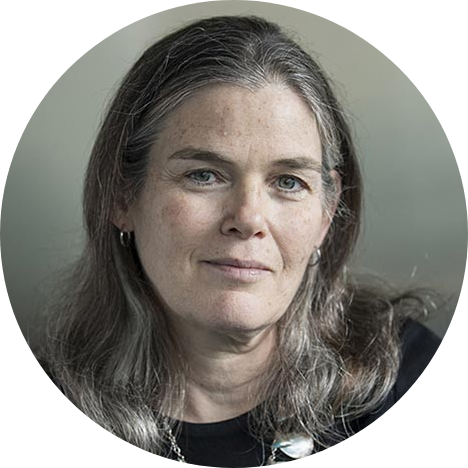
Founder and CEO, insitro
Faculty Guest Speakers (2019)
Professor, Neurology, UCSF
Professor of Pediatrics, UCSF
Chief Data Scientist, UC Health
Chief Data Scientist, UC Health
Assistant Professor, Institute for Neurodegenerative Diseases, UCSF
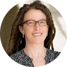
Professor, Epidemiology & Biostatistics, UCSF
Assistant Professor, Otolaryngology, UCSF
Professor of Medicine, UCSF
Director of Digital Health, UCSF
Director of Digital Health, UCSF
Student Instructors, TAs, and Mentors (2019)
- Instructor: Eugene Davydov
- Python Instruction Team: Stephanie Wankowicz, Matthew Johnson, Taylor Cavazos
- Coordinator: Eva Kye-Zwiebel
- On-site Coordinator: Jillian Burchard
- Head TA: Maya Gonzalez
- Instruction TA: Miriam Goldman
- Project TAs: Jean Costello (Witte Lab), Brian Le (Sirota Lab), Douglas Myers Turnbull (Kokel Lab), Leanna Morinishi (Altschuler/Wu Lab), Maryana Alegro (Grinberg Lab)
- Other TAs: Tomiko Oskotsky
- Graduate Student Panel: Wren Saylor, Daniel Bunis, Stella Belonwu, Katharine Wu, Emmalyn Chen, Taylor Cavazos
- Industry Panel: Katie Planey, Maynard Holiday, Natalie Casey, Ladan Doroud, Sofia Kyriazopoulou-Panagiotopoulou
- Undergraduate Panel: Manish Paranjpe, Maya Gonzales, Jillian Burchard
- AI4ALL Panel: Aarzu Gupta, Irene Yang, Ria Doshi
- Maker’s Lab/Library: Karla Lindquist, Angelo Pelonero, Joanna Kang
- CZ BioHub: Emily Crawford, Jim Karkanias, Phoenix Logan, James Webber, Gabby Shvartsman, Pranathi Vemuri, Angela Pisco, Saransh Kaul, Olga Botvinnik, Lucy Li, Amy Lynden, Joshua Batson, Giana Cirolia , Saharai Caldera, Michelle Grunberg, Paula Hayakawaserpa, Katharine Travisano
- AI4ALL: Wells Lucas Santo, Tiffany Shumate, Tess Posner, Olga Russakovsky, Fei Fei Li
- Personal Growth Sessions: Amber Cobbett, Bill Lindstaedt, Megan Dean Farah, Eva Kaye-Zwiebel, Laura Gunsalus, Sarah Tan, Miriam Goldman
- Administrative Support: Edna Rodas